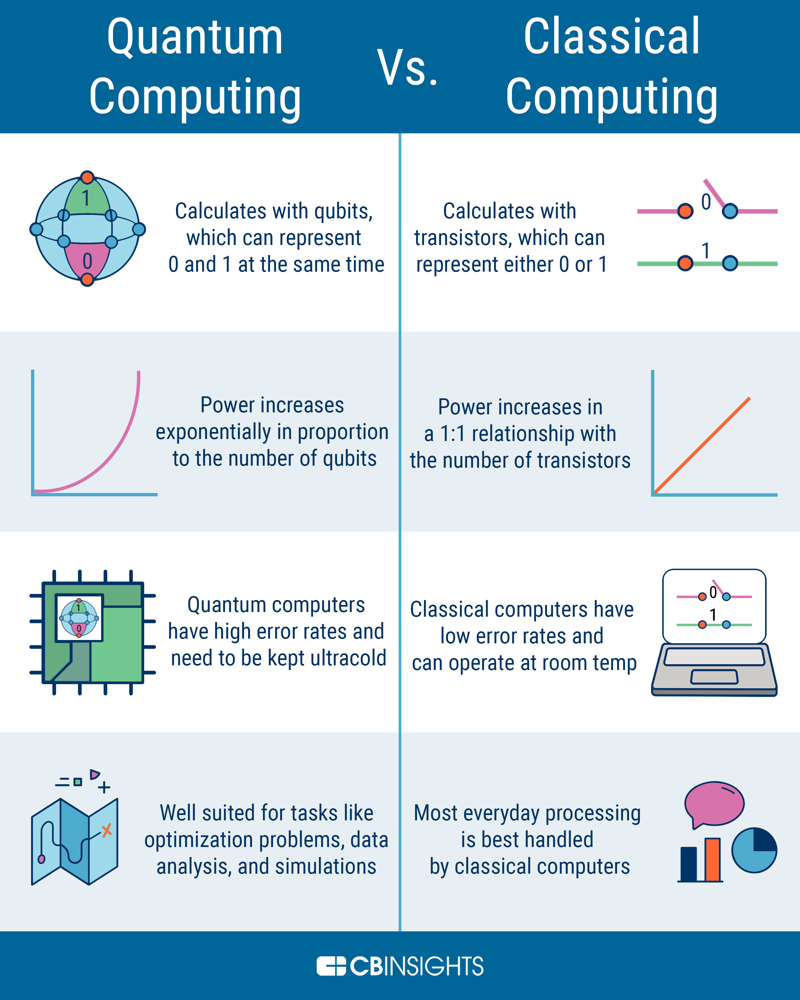

What it does

- Quantum computing is like a regular computer but it runs on a different level of speed on how it processes information
- Like regular computers that take 0’s and 1’s at a certain rate quantum computing does 1’s and 0’s at the same time.
- It harnesses the phenomena of quantum mechanics to deliver a huge leap forward in computation to solve certain problems
- It solves problems that regular computers can’t solve
- quantum computing solves these problems using a NP problem which tries every possible solution to figure out and find the solution
How it works
- Quantum computers create vast multidimensional spaces to represent a very large problem. Classical supercomputers cannot do this.
- Have algorithms that employ quantum wave interference that are then used to find solutions, and then translate them back into forms we can use and understand